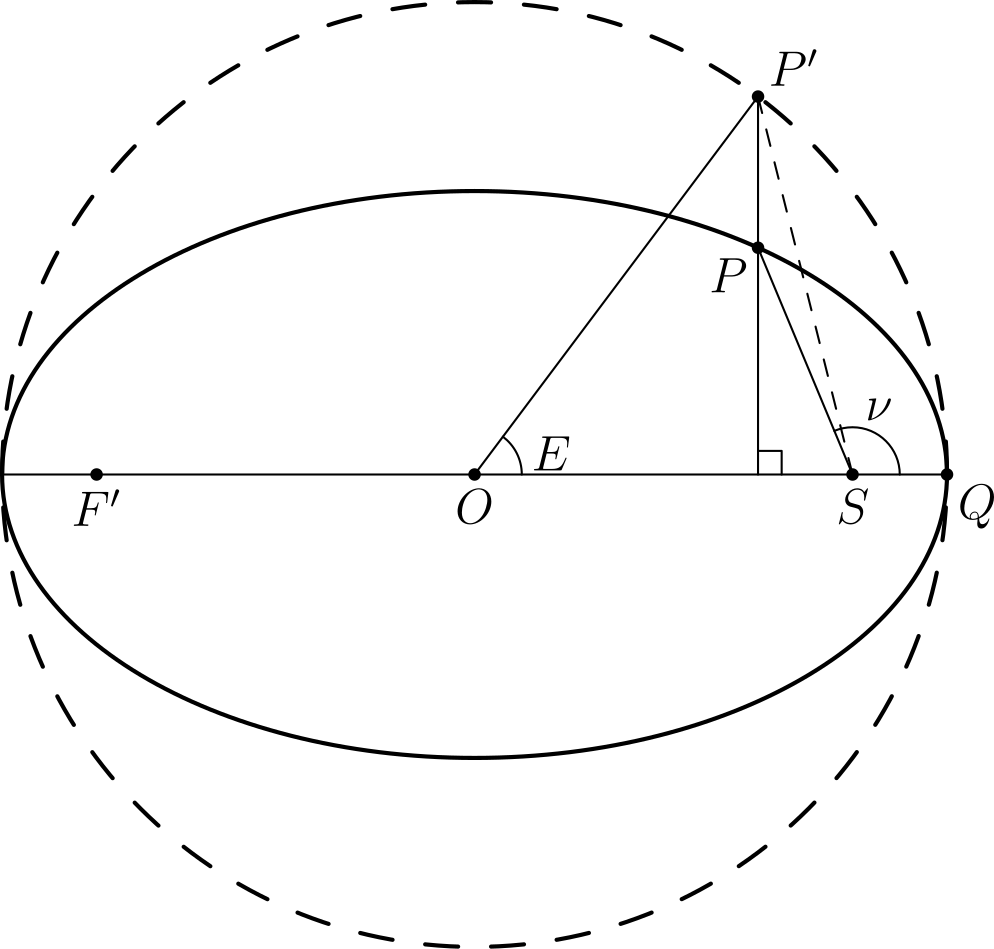

Gravitation
- Newton’s law of universal gravitation
- Barycentric coordinates
- Reduced mass
- Kepler’s laws of planetary motion
- Important results in gravitation
- Tidal forces
- Roche limit
- Orbital mechanics
- Three-body problem
- Lagrangian points
- References
Newton’s law of universal gravitation
Newton’s law of universal gravitation gives the gravitational force between two point masses. If the masses $m_1$ and $m_2$ are separated by a distance $r$, the gravitational force is given by
where $G = 6.67430 × 10^{-11} \mathrm{ m^3 kg^{-1} s^{-2}}$ is the gravitational constant.
The gravitational force between two masses is attractive, i.e. the force exerted on $m_2$ by $m_1$ points in the direction of $m_1$ and vice versa. The magnitude of the force is directly proportional to the each of the masses of the two objects, and inversely proportional to the square of the distance between them. In addition, by Newton’s third law, the gravitational force exerted by $m_1$ on $m_2$ is equal in magnitude and opposite in direction to that exerted by $m_2$ on $m_1$. Using vector notation, we may also write
Barycentric coordinates
In the two-body problem, each object exerts a gravitational force on the other, and assuming no external forces are acting on the system, both objects orbit about their centre of mass or barycentre.
The position of the centre of mass can be seen as a weighted average of the positions of the individual objects. For two objects with masses $m_1$ and $m_2$, located at positions $x_1$ and $x_2$ respectively, the position of the centre of mass is given by
Extending this concept to multiple masses and using vectors to represent the positions of the objects, we can write the position vector of the centre of mass as
where $m_i$ and $\mathbf{r}_i$ represent the mass and position of an individual object, and the sums are taken over all objects in the system.
Suppose that our particles are also moving with different velocities $\dot{\mathbf{r}}_i$. Consider the frame, moving with some velocity $\mathbf{u}$, in which the total momentum of these particles is zero:
Therefore, in the frame that moves with the same velocity as the centre of mass, the total momentum of all the particles is zero. In addition, by differentiating again with respect to time, it is seen that
Thus, external forces acting on the entire system will accelerate the centre of mass as though they act on a point mass with mass $\sum m_i$ (total mass of the system) located at the centre of mass.
Reduced mass
Consider two bodies, $m_1$ and $m_2$. We know that
and by Newton’s third law, $\mathbf{F}_{1\rightarrow 2} = - \mathbf{F}_{2\rightarrow 1}$. Therefore, the relative acceleration $\mathbf{a}$ of the two bodies is
Thus, if we hold $m_1$ fixed, then $m_2$ appears to move relative to it as though it has a mass $\mu = \frac{m_1 m_2}{m_1 + m_2}$. The quantity $\mu$ is known as the reduced mass. However, in order for the magnitude of the force between the two bodies to remain the same, $m_1$ also appears to have a different apparent mass $M$. We note that $F_{1\rightarrow 2} = \frac{G m_1 m_2}{r^2} = \frac{G M \mu}{r^2}$. Therefore $M = m_1 + m_2$.
Kepler’s laws of planetary motion
Kepler’s first law
Kepler’s first law states that every planet orbits the Sun in an ellipse, with the Sun at one focus.
More generally, the orbit of an object about another due to gravity adopts a shape known as a conic section, which may be a circle, ellipse, parabola, or hyperbola.
Derivation of Kepler’s first law
To prove Kepler’s first law, it is useful to introduce the concept of the Laplace-Runge-Lenz vector1. For a central force $\mathbf{F} = - \frac{k}{r^3} \mathbf{r}$, the Laplace-Runge-Lenz vector is defined as
The vector is conserved in orbital motion of a particle under the influence of such a central force. To derive this vector, we note that
Using the vector triple product identity
we get
Since
then
However, since $\mathbf{L} = \mathbf{r} \times \mathbf{p} = \mathbf{r} \times (m \dot{\mathbf{r}})$,
where $\mathbf{A}$ is a constant vector of integration. Therefore, $\mathbf{A}$ represents the Laplace-Runge-Lenz vector. It is useful to note that $\mathbf{A}$ lies in the same plane as the orbit. This can be seen by rewriting
This produces a linear combination of $\mathbf{r}$ and $\dot{\mathbf{r}}$, both of which lie in the plane of the orbit.
For gravitation, the Laplace-Runge-Lenz vector is
Take the dot product with $\mathbf{r}$ on both sides to get
Using the property $\mathbf{A} \cdot (\mathbf{B} \times \mathbf{C}) = (\mathbf{A} \times \mathbf{B}) \cdot \mathbf{C}$,
Let $\theta$ be the angle between $\mathbf{A}$ and $\mathbf{r}$. Because $\mathbf{L}$ and $\mathbf{A}$ are constants, define $p = \frac{L^2}{GMm^2}$ and $e = \frac{A}{GMm^2}$. Then
This is the equation of a conic section in polar coordinates, with the origin $(0,0)$ as a focus, $e$ the eccentricity of the conic section, and $p$ is the semi-latus rectum. The semi-latus rectum is related to the semi-major axis $a$ by $p = a (1 - e^2)$ for $e < 1$ and $a (e^2 - 1)$ for $e > 1$.
Now, if we consider the dot product of $\mathbf{A}$ with itself, and use the fact that $\mathbf{p}$ and $\mathbf{L} = \mathbf{r} \times \mathbf{p}$ are perpendicular, we can derive an expression for $e$:
where $E = \frac{p^2}{2m} - \frac{GMm}{r}$ is the total energy of the object in orbit, i.e. the sum of its kinetic and gravitational potential energies.
Kepler’s second law
Kepler’s second law states that a line joining a planet and the Sun sweeps out area at a constant rate.
If the distance between the planet and the Sun is $r$, and the position angle of the planet (measured about the Sun from some point in the orbit) is $\theta$, then the rate at which area is swept out is
Derivation of Kepler’s second law
For a test particle of mass $m$ under the gravitational influence of a large mass $M$, the acceleration of the test particle is $\ddot{\mathbf{r}} = - \frac{GM}{r^3}\mathbf{r}$.
We have shown in the previous section that $\mathbf{L} = \mathbf{r} \times \mathbf{p} = m(\mathbf{r} \times \dot{\mathbf{r}})$ is constant for an object moving under the influence of a central force like gravitation. Since $\boldsymbol{\omega} = \frac{\mathbf{r} \times \dot{\mathbf{r}}}{r^2}$,
A simple rearrangement directly leads to Kepler’s second law, which we can now write as
Kepler’s third law
Kepler’s third law states that the square of the period of an orbit is proportional to the cube of the semi-major axis of the orbit.
Equivalently, this can be written as
Evidently, this law is meant to apply to circular and elliptical orbits, where the period is well-defined.
Derivation of Kepler’s third law
This law directly follows from the previous two. The area of an ellipse with semi-major axis $a$, semi-minor axis $b$, and eccentricity $e$ is
Since the rate at which the area of this ellipse is swept out is constant, the period is given by
where we have used the result from the derivation of the second law. Squaring both sides yields
where we have used the properties of the semi-latus rectum $p = \frac{L^2}{GMm^2}$ and $p = a (1 - e^2)$ introduced earlier in the derivation of the first law.
Important results in gravitation
Shell theorem
The shell theorem applies to spherical shells with a uniform mass distribution, and provides us with two important results:
- the gravitational field outside the spherical shell is equivalent to that of a point mass with the same total mass $M$ located at the centre of the shell;
- the gravitational field inside the spherical shell is zero.
Since uniform spheres are made of many layers of spherical shells, we can also arrive at the following results for a uniform sphere of radius $R$:
- the gravitational field outside the sphere is equivalent to that of a point mass with the same total mass $M$ located at the centre of the sphere;
- the gravitational field at a distance $r < R$ from the centre of the sphere is equivalent to that of the part of the sphere located within a radius $r$ from its centre (the spherical shells outside do not contribute).
Derivation of the shell theorem
Consider a point $P$ located a distance $r$ away from (and outside) a spherical shell of radius $R$ and mass $M$ as shown in the figure below. The mass per unit surface area of the shell is $\sigma = \frac{M}{4 \pi R^2}$. We intend to find the gravitational field from the shell at $P$.

At an angle $\theta$ on the shell away from the line $\overline{OP}$, where $O$ is the centre of the shell, there is an infinitesimal circular strip of radius $R \sin{\theta}$ and width $R \mathrm{d}\theta$. Each point on this strip is at a distance $s$ away from $P$. The gravitational force acts at some angle $\phi$ away from the line $\overline{OP}$, but due to symmetry, the net contribution from the circular strip acts along the line of $\overline{OP}$.
The differential gravitational field from a circular strip is given by
Therefore, integrating over the whole sphere:
Hence, the field outside the spherical shell is equivalent to that of a point mass with the same total mass $M$ located at the centre of the shell.
If $P$ is located inside the spherical shell, our limits of integration change, with $s = R - r$ when $\theta = 0$ and $s = R + r$ when $\theta = \pi$ instead. Then
Hence, the gravitational field is zero inside the shell.
Gravitational binding energy of a sphere
The gravitational binding energy of a uniform spherical object is the amount of energy needed to completely separate the components to reduce the gravitational potential to zero. Equivalently, it is the gravitational potential energy change when masses from infinity are assembled to form the spherical object.
Due to the shell theorem, different parts of the spherical object experience different gravitational fields. This complicates the process of calculating the gravitational binding energy of the sphere.
Consider a shell of radius $r < R$ and thickness $\mathrm{d}r$. The mass of this shell is $4 \pi r^2 \rho \mathrm{d}r$. By the shell theorem, the portion of the sphere outside radius $r$ does not contribute to the gravitational field at $r$. Hence, the gravitational potential energy of this shell only comes from the portion of the sphere within radius $r$, and is
Tidal forces
Roche limit
The Roche limit describes the minimum orbital radius of an object of mass $m$ about a larger primary object of mass $M$ before it breaks up due to tidal forces. The object assumed to be held together solely by its own gravity.
For a rigid satellite, i.e. one that is assumed to remain a sphere until it breaks up, the Roche limit is
Orbital mechanics
Orbital elements
To completely specify a planet’s orbit and its position, 6 orbital parameters are required, corresponding to the 6 degrees of freedom of the planet (3 degrees each in position and velocity). The typical set of orbital elements for a planet in the solar system are:
- $a$
- the semi-major axis of the orbit;
- $e$
- the eccentricity of the orbit;
- $i$
- the inclination of the orbit, relative to the plane of the ecliptic;
- $\Omega$
- the longitude of the ascending node, relative to the vernal equinox and measured in the plane of the ecliptic;
- $\pi$
- the longitude of the perihelion;
- $L$
- the mean longitude of the planet.
The first five items describe the orbit itself, while the last provides information on where the planet is located in the orbit. Note that the quantities $\pi$ and $L$ are compound angles that are sums of angles measured in two planes:
- $\pi = \Omega + \omega$ where $\omega$ is the argument of perihelion, the angle between the ascending node and the perihelion measured in the plane of the orbit;
- $L = \pi + M = \Omega + \omega + M$ where $M$ is the mean anomaly of the planet measured in the plane of the orbit.
Kepler’s equation
Consider the orbit of a planet $P$ about the star $S$ as shown in the figure below. This orbit has a semi-major axis $a$ and eccentricity $e$. The true anomaly $\nu$ is the angle $QSP$, measured from the periapsis $Q$. The outer dashed circle (with centre $O$) is the auxiliary circle of the orbit, which is a circle with radius equal to the semi-major axis of the orbit. If a line perpendicular to the major axis of the orbit is drawn passing through $P$, this line meets the auxiliary circle at a point $P'$. The angle $QOP'$ is defined as the eccentric anomaly2.

The eccentric anomaly is related to the true anomaly by the relation
The distance $r$ between $P$ and $S$ can be calculated using the eccentric anomaly by
Now consider a fictitious planet $R$ that has a circular orbit about $S$ with the same semi-major axis as $P$. Their orbits are shown in the figure below. Both $P$ and $R$ will complete their orbits in the same amount of time. Suppose also that when $P$ is at the periapsis $Q$, $R$ is at the point $Q'$. Then, as $P$ and $R$ move about their orbits, the angle $Q'SR$ describes the mean anomaly $M$ of the planet $P$2. $M$ increases linearly with time, but $\nu$ does not (as a consequence of Kepler’s second law).

The eccentric anomaly is related to the mean anomaly by Kepler’s equation, which is
where the angles are given in radians.
Solving for $M$ when $E$ is known is straightforward. However, solving for $E$ given $M$ cannot be done directly. Frequently, iterative methods are used to arrive at an approximate value for $E$.
Vis-viva equation
The vis-viva equation relates the orbital speed of an object to the distance from the central body. It is given by
Derivation of the vis-viva equation
The velocity of the object can be split into radial and tangential components. The radial component is $\frac{\mathrm{d}r}{\mathrm{d}t}$ and the tangential component is $r\frac{\mathrm{d}\theta}{\mathrm{d}t}$.
The radial component is
Since we know $r^2 \frac{\mathrm{d}\theta}{\mathrm{d}t} = \frac{L}{m} = h$,
The tangential component is
Therefore, the overall velocity is
Using the fact that $p = \frac{h^2}{GM}$, and $p = a(1 - e^2)$,
Three-body problem
Lagrangian points
One particular subset of the three-body problem is the circular restricted three-body problem, where by we consider two relatively large masses $m_1$ and $m_2$ (with $m_2 < m_1$) in circular orbits around their barycentre, and determine the motion of an infinitestimal mass $\mu$ that is deemed to be so small it exerts no significant gravitational force on $m_1$ or $m_2$.
The Lagrangian points are a set of five solutions, named after Joseph-Louis Lagrange who described them in a 1772 essay on the three-body problem3, in which $\mu$ maintains a circular orbit about the barycentre with the same angular velocity as $m_1$ and $m_2$. This allows $\mu$ to stay in the same relative position as seen from either $m_1$ or $m_2$, and these five relative positions are termed the Lagrangian points. They are numbered L1 through L5, and all of these points lie in the same plane as $m_1$ and $m_2$. L1, L2 and L3 are collinear (along the same line) with $m_1$ and $m_2$, and L4 and L5 form equilateral triangles with $m_1$ and $m_2$.
L1, L2 and L3
The three collinear Lagrangian points are unstable equilibria.
L4 and L5
L4 and L5 form equilateral triangles with $m_1$ and $m_2$, such that L4 is 60° ahead of $m_2$, and L5 is 60° behind $m_2$. These two Lagrangian points are relatively stable, provided
In the Solar System, the L4 and L5 points of the orbits celestial bodies may be occupied by smaller bodies. Asteroids at the L4 and L5 points of larger planets are often referred to as trojans. Jupiter has many asteroids around its L4 and L5 points; the asteroids at L4 are traditionally named after Greek characters, while those at L5 are named after Trojan characters.
Saturn has trojan moons, whereby the L4 and L5 points of larger moons are occupied by much smaller moons. The known examples are Tethys with its trojans Telesto and Calypso, and Dione with Helene and Polydeuces.
Rotating frames of reference
Consider a vector $\mathbf{r}$ in a stationary coordinate system, with the unit vectors $\mathbf{i}$, $\mathbf{j}$, $\mathbf{k}$ corresponding to the axes $x$, $y$, and $z$ respectively. Then consider a rotating coordinate system centred about the same origin, but rotating with angular velocity $\boldsymbol{\Omega}$. Let the unit vectors in this rotating frame be $\mathbf{i}'$, $\mathbf{j}'$, $\mathbf{k}'$, corresponding to axes $x'$, $y'$ and $z'$.
If we write $\mathbf{r} = r_x \mathbf{i}' + r_y \mathbf{j}' + r_z \mathbf{k}'$, we can take the derivative with respect to time and apply the product rule:
For the unit vectors, $\frac{\mathrm{d} \mathbf{i}'}{\mathrm{d}t} = \boldsymbol{\Omega} \times \mathbf{i}'$, as they rotate about the axis but do not change in magnitude. Then we can write the previous result as
where the subscripted term $\left( \frac{\mathrm{d} \mathbf{r}}{\mathrm{d}t} \right)_{rot}$ represents the quantity as it would be measured in the rotating frame. We will write this as $\mathbf{v}_{rot}$, the velocity measured in the rotating frame.
Taking a second derivative with respect to time:
where we have rewritten $\left( \frac{\mathrm{d} \mathbf{v}_{rot}}{\mathrm{d}t} \right)_{rot}$, the time derivative of $\mathbf{v}_{rot}$ measured in the rotating frame, as $\mathbf{a}_{rot}$, the acceleration measured in the rotating frame.
If we rearrange this from the perspective of the rotating frame,
Multiplying through by the mass of an object $m$ gives us
This suggests the presence of 3 fictitious forces in the rotating frame of reference:
- the Coriolis force $\mathbf{F}_\text{Coriolis} = - 2 m \boldsymbol{\Omega} \times \mathbf{v}_{rot}$
- the centrifugal force $\mathbf{F}_\text{centrifugal} = - m \boldsymbol{\Omega} \times \left( \boldsymbol{\Omega} \times \mathbf{r} \right)$
- the Euler (or azimuthal) force $\mathbf{F}_\text{azimuthal} = - m \left( \frac{\mathrm{d} \boldsymbol{\Omega}}{\mathrm{d}t} \right) \times \mathbf{r}$
These additional forces are required to fully describe the apparent motion of objects in the rotating frame, in addition to the acceleration $\mathbf{a}$ that results when some force $\mathbf{F}$ is applied on them.
Derivation of the Lagrangian points
The following derivation follows the outlines of those given by Fitzpatrick4 and Greenspan5.
Suppose we have two masses, $m_1$ and $m_2$, that are in circular orbits about their common barycentre. They each have an angular velocity $\boldsymbol{\Omega}$, which we will define to lie in the $z$ axis of a stationary frame centred on their barycentre. Their orbits therefore lie in the $x-y$ plane. Consider a rotating frame centred on the barycentre, rotating with the same angular velocity $\Omega$ about its $z'$ axis. Let this $z'$ axis lie in the same direction as the $z$ axis of the stationary frame. For convenience, we additionally define the $x'$ axis such that both $m_1$ and $m_2$ lie on the $x'$ axis. If the distance between the masses is $R$, then their coordinates in the rotating frame are
By Kepler’s third law, $\Omega$ is given by
Suppose we place an infinitesimal mass $\mu$ at some position $\mathbf{r} = x' \mathbf{i}' + y' \mathbf{j}' + z' \mathbf{k}'$ in the rotating frame, and make the assumption that $\mu$ is so small it exerts no gravitational force on $m_1$ or $m_2$. Accordingly, the gravitational force acting on it is
In the rotating frame, its apparent acceleration is then
If we define $\boldsymbol{\rho}_1 = \mathbf{r} - \mathbf{r}_1$, $\boldsymbol{\rho}_2 = \mathbf{r} - \mathbf{r}_2$, then
Notice that if we take the partial derivatives of $\frac{1}{\rho_1}$ and $\frac{1}{\rho_2}$ with respect to $x'$:
Similarly, we can show that
Therefore,
If we write a potential $U'$ such that
we can rewrite the above as
This potential $U'$ acts as the apparent potential of $\mu$, and it is the sum of the gravitational potential and the potential due to the apparent centrifugal force. The acceleration of the object is due to the combined effect of the force (the gradient of the potential) and the Coriolis force.
Since the velocity $\mathbf{v}_{rot}$ and acceleration $\mathbf{a}_{rot}$ of $\mu$ at the Lagrangian points should be zero in the rotating frame, then $-\nabla U' = \mathbf{0}$ at these points.
The easiest coordinate to examine is $z'$. We require that
However, since $\rho_1$ and $\rho_2$ are always greater than zero, the solution requires $z' = 0$.
Next, we turn our focus to $x'$ and $y'$:
The two immediately obvious sets of solutions for the second equation are
Consider the first condition. $y' = 0$ implies that $\rho_1^2 = (x' - r_1)^2$ and $\rho_2^2 = (x' - r_2)^2$. We have to be wary of taking the square roots, as $\rho_1$ and $\rho_2$ are positive quantities by default (as the magnitudes of $\boldsymbol{\rho}_1$ and $\boldsymbol{\rho}_2$), but the same cannot be said for $(x' - r_1)$ and $(x' - r_2)$. Because $r_1 < 0 < r_2$ as defined earlier, there are three cases to consider:
Therefore:
These correspond to the cases for L3, L1 and L2 respectively.
For L1, $r_1 < x' < r_2$, and thus
We can rearrange this to obtain
which we can substitute into our original equation to eliminate $x'$,
For our convenience, define $\alpha = \frac{\rho_1}{R}, \beta = \frac{\rho_2}{R}$:
Since $\alpha + \beta = 1$, this also means
The expression on the right hand side for $\beta$ is 0 when $\beta = 0$. Hence, in the case that $m_2 \ll m_1$, we can re-express the right hand side as a Taylor series about $\beta = 0$.
For L2, $r_1 < r_2 < x'$, and therefore
This implies
As above, we can rewrite the force balance in terms of $\alpha$ and $\beta$:
Here, $\alpha - \beta = 1$, and thus
Once again, the expression on the right hand side for $\beta$ is 0 when $\beta = 0$.
For L3, $x' < r_1 < r_2$, and therefore
This implies
As above, we can rewrite the force balance in terms of $\alpha$ and $\beta$:
Here, $\beta - \alpha = 1$, and thus
The expression on the right hand side for $\alpha$ is 0 when $\alpha = 1$ (and $\beta = 2$; the case where $\alpha < 0$ would not be physical).
Now consider the second condition, that $0 = - \frac{G m_1}{\rho_1^3} - \frac{Gm_2}{\rho_2^3} + \Omega^2$. We can rewrite the expression for $-\frac{\partial U'}{\partial x'}$ as:
Because $m_1 r_1 + m_2 r_2 = 0 \Rightarrow -m_1 r_1 = m_2 r_2$,
Having established that $\rho_1$ and $\rho_2$ are equal, we can find their value:
This tells us that $m_1$, $m_2$ and $\mu$ form an equilateral triangle of side length $R$. We can immediately determine the values of $x'$ and $y'$ with this information, but we can also solve explicitly for $x’$ and $y’$, given that
Taking the difference of the two equations to eliminate $y'$,
Thus, L4 is the point corresponding to $(x', y', z') = (\frac{R}{2} + r_1, +\frac{\sqrt{3}}{2} R, 0)$, and L5 is the point corresponding to $(x', y', z') = (\frac{R}{2} + r_1, -\frac{\sqrt{3}}{2} R, 0)$.
In Lagrange’s original essay, he demonstrates the existence of what we now know as the L4 and L5 points without the requirement that $\mu$ be of a negligible mass3.
References
-
Gibbs JW (Josiah W, Wilson EB. Vector analysis; a text-book for the use of students of mathematics and physics [Internet]. New York, C. Scribner’s Sons; 1901 [cited 2020 Jan 23]. 470 p. Available from: http://archive.org/details/vectoranalysiste00gibbiala ↩
-
Meeus J. Astronomical Algorithms. 2nd ed. Willmann-Bell, Inc.; 1998. ↩ ↩2
-
Lagrange J-L. Œuvres de Lagrange [Internet]. Vol. 6. Paris: Gauthier-Villars; 1867 [cited 2020 Mar 7]. Available from: https://gallica.bnf.fr/ark:/12148/bpt6k229225j ↩ ↩2
-
Fitzpatrick R. Lagrange points [Internet]. 2016 [cited 2020 Feb 6]. Available from: https://farside.ph.utexas.edu/teaching/celestial/Celestial/node84.html ↩
-
Greenspan T. Stability of the Lagrange Points, L4 and L5. Available from: http://pi.math.cornell.edu/~templier/junior/final_paper/Thomas_Greenspan-Stability_of_Lagrange_points.pdf ↩